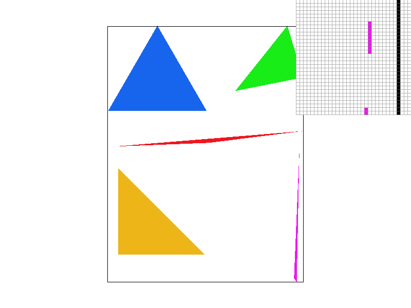
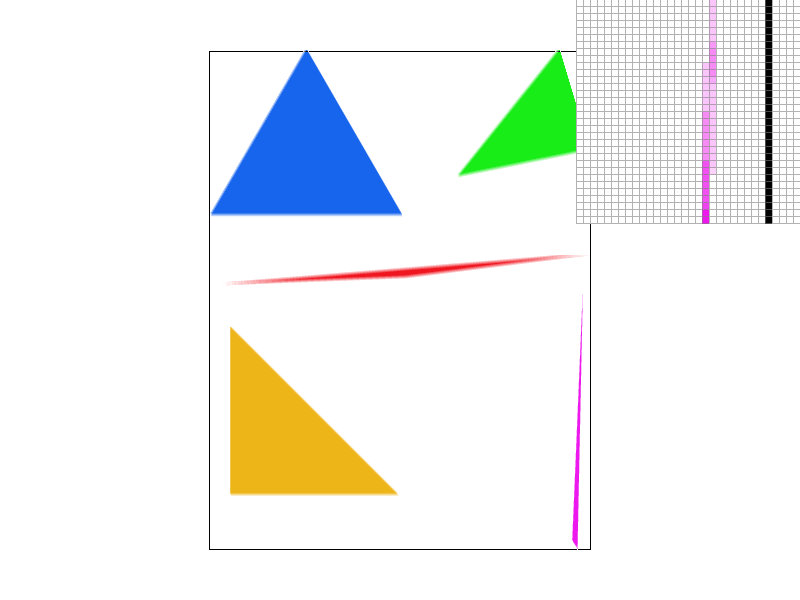
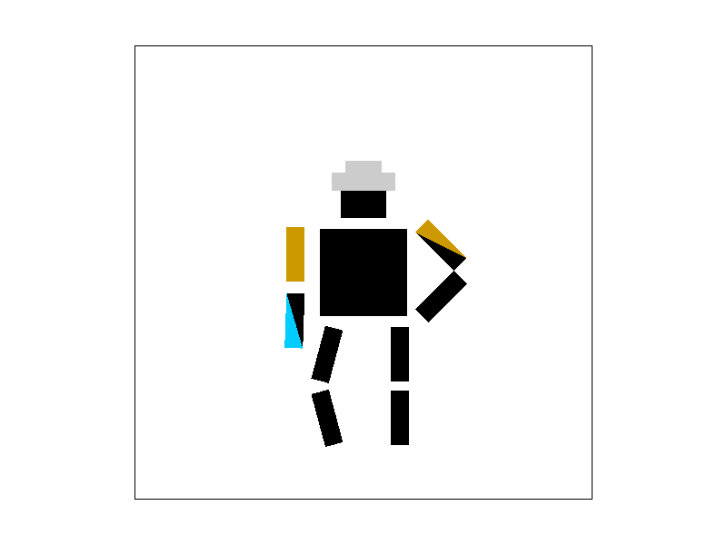
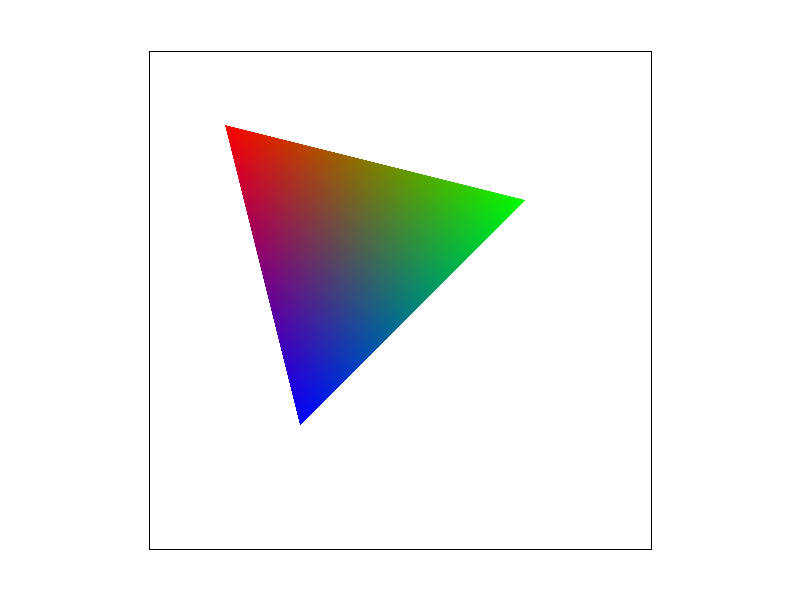
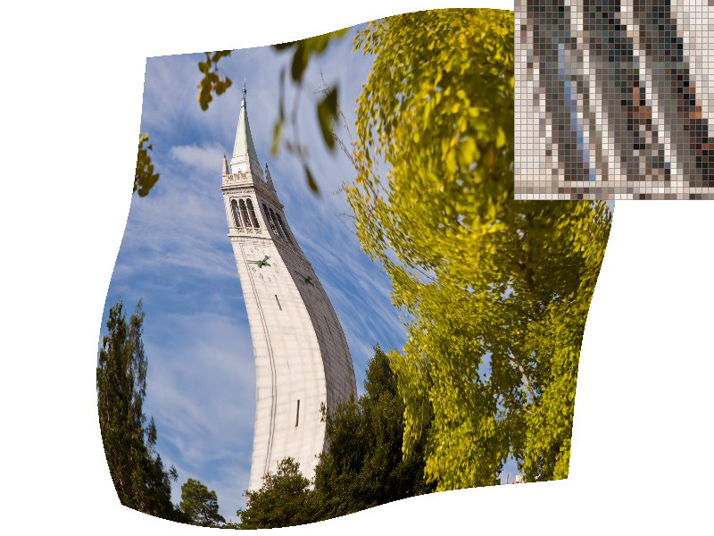
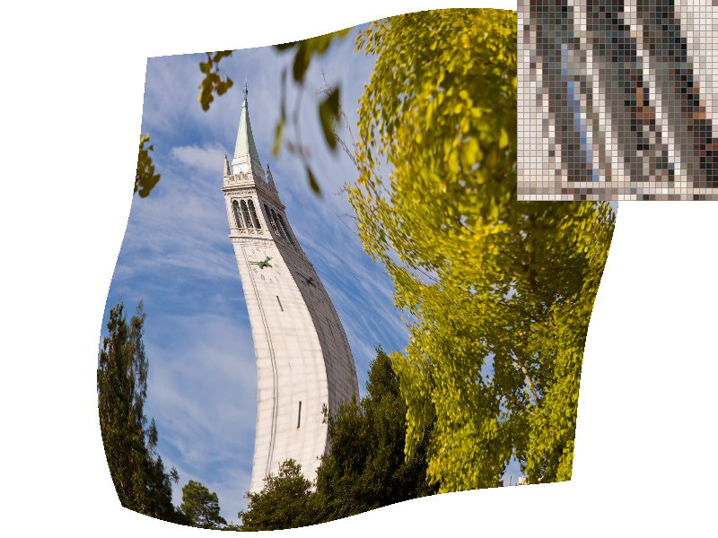

CS184: Computer Graphics and Imaging
Project 1: Rasterizer
Yuxiao Tang
Overview
In the project, I first tried to rasterize a triangle. I implemented the rasterize_triangle function and it makes my image look well but with a lot of jaggies. Then I used super-sampling to reduce the effect of aliasing. It actually worked by cost a lot of time in computing. In the transform task, I simply filled the three functions and got the right picture. Then I modified the robot.svg file to let the cubeman do something else. After that, I came to the most interesting part of this project. I used the formula in the slides to compute the barycentric coordinate and discovered an optimization for triangle rasterization. I used two for loop to perform barycentric interpolation through the triangle area. Then I reused the code of computing barycentric coordinates in Task 5 and Task 6. In Task 5, I converted the point inside the triangle from (x, y) space to (u, v) space by barycentric interpolation and then magnified the (u, v) coordinate by the width and height of texture. Then in Task 6, I computed the mipmap level based on the p_dx_uv and p_dy_uv parameters. Then I performed the corresponding level sample method according to the given psm value. After all this were done, I compared the effect of these techniques by doing all combinations of psm and lsm. And I discovered some interesting phenomena playing with the pictures.
Task 1: Drawing Single-Color Triangles
My algorithm for rasterizing a triangle is simple. First I did some calculation to decide the winding order of the three points. For clockwise points, I implemented a helper function to reverse the winding order for them. Then I did 3 line tests on every pixel center (x + 0.5, y + 0.5) within the bounding box of the triangle to determine whether it is inside or on the boundary of the triangle. For each pixel that fulfills the condition above, I call the rasterize_point(px, py, col) to fill the color for it. My algorithm is no worse than one that checks each sample within the bounding box of the triangle because it's actually how it works.

This is a png screenshot of basic/test4.svg (Fig. 1). You can see there are a lot of jaggies on the boundary of the triangles. As the pixel inspector shows, some parts of the triangle are not correctly demonstrated. This is because of aliasing. The center of the incorrect pixels are not covered by the triangle, so we don't see color in those pixels.
Extra credit: After finishing Task 4, I noticed that if a the center of a point is inside the triangle, its barycentric coordinate is non-negative. If we use 3 line tests to determine the point, we will need to consider the winding order of the three points. But if we use the barycentric coordinate to determine, we don't need to care about the winding order. And instead of doing three dot product calculation, we only need to calculate three parameters of the barycentric coordinate. So I optimize it by checking whether the the barycentric coordinate is non-negative. I added a timer around svg.draw() and ran the program several times. Before the optimization, the time consumed to draw basic/test3.svg is around 300 ticks. After the optimization, the time consumed to draw the same image is around 200 ticks.
Task 2: Antialiasing by Supersampling
I didn't use the sample_buffer to store the supersample data. Instead, I created a new int buffer called color_weight to represent how many supersample points of one pixel are inside the triangle. So the sample_buffer is actually not used and can be removed. In this way, we calculate and store the color weights of pixels instead of supersample data. The color weights of a pixel are determined by how many supersample points are inside the triangle. For example, if 50% of the supersample points are inside the triangle while the other 50% are not, and the color of this sample point is red, then the weights should be 0.5*sample_rate and this pixel should be half-red when demonstrated on the screen. Considering Color(1, 1, 1) denotes white and Color(0, 0, 0) denotes black, I used this formula to determine the color of a pixel according to the value of color_weight:
col += (Color::White - col) * (1.0 - (float)w / (float)sample_rate); // w is the color_weightThe traversal method is similar to Task 1 except I need to calculate the super sample point coordinates and traverse them to determine the weights. And the trade-off here is that we should clear the color_weight once it is used.
After all these are done, I observed that using supersampling, the triangle edges were smoother but more blurred.
The following 3 images demonstrate how supersampling works.

As the sampling rate increases, the image gets less aliasing and but more blurred. The magenta triangle corner gets filled by light magenta. That is because although the pixel center is not inside the triangle, some super sample points are inside the triangle. So the some of the pixels which are white at sample_rate==1 get a lighter color at sample_rate==16.
Task 3: Transforms
This is the most easier part of the project. They operate in homogenous coordinates, so I simply fill the translate, scale, and rotate functions according to the slides. Then I update svg/transforms/robot.svg to create a cubeman wearing a grey hat akimbo against the wall.

Task 4: Barycentric coordinates
I draw a smoothly blended color triangle as below.

The triangle consists of one red vertex, one green vertex, and one blue vertex. I implemented the calculation of barycentric coordinate according to the formula in the slides. As we can see, the barycentric coordinate represents the relative spatial position of a point to the three vertices. The closer a point is to any vertex, the more similar its color is to that vertex, and also the closer its parameter related to that vertex in its barycentric coordinate is to 1.
Here is the screenshot of svg/basic/test7.svg.

Task 5: "Pixel sampling" for texture mapping
To do texture mapping, we have to convert the coordinate (x, y) in screen space to the coordinate (u, v) in texture space. With the (u, v) coordinate in texture space, we can use different methods to do pixel sampling at (u, v), get the corresponding color, and then rasterize triangle in screen space. Given the (x, y) and (u, v) coordinates of the triangle vertices, we need to use barycentric interpolation to calculate the (u, v) coordinate for each point (x, y) inside the triangle. Then we fill in the SampleParams struct and pass it into the tex.sample() function. In tex.sample() function, I checked the psm flag and performed corresponding pixel sampling method for the (u, v) coordinate. But before that, we need to scale up the (u, v) coordinate according to the width and height of the texture image at level level, which is represented by mipmap[level]. For sample_nearest, I just did some round operation, got the nearest (tx, ty), and return mip.get_texel(tx, ty). For sample_bilinear, I expanded the formula for bilinear interpolation. With the color of the nearest four texels represented by c00, c01, c10, c11, I returned (1.0 - s) * (1.0 - t) * c00 + s * (1.0 - t) * c10 + (1.0 - s) * t * c01 + s * t * c11.
Here are four screenshots of examples:
From these four images we can see great difference between nearest sampling and bilinear sampling especially on edge. As we know, supersampling reduces jaggies. However, bilinear sampling helps to make the image look much smoother. In nearest sampling image, you can see a lot of jaggies and some sharp edges. But in bilinear sampling image, those edges look smoother. I think this is because bilinear sampling uses four nearest neighbor to determine the color of one pixel, which better represents what the color of this pixel should be.
Task 6: "Level sampling" with mipmaps for texture mapping
Mipmaps help to deal with different footprint size in upsampling and downsampling of the texture space. Level sampling is a method in which we precompute different levels of a image, and then sample in appropriate level according to the distance in (u, v) space. In this part, I reused some of the code in Task 5. I computed the sp.p_dx_uv and sp.p_dy_uv in rasterize_textured_triangle. Then in function Texture::get_level(), I computed the partial derivatives of u, v with respect to x, y and store them in two Vector2D variables. Then, I can simply call the norm() function and get max L value. Since SampleParams, we can simply perform the corresponding method according to lsm and psm flags. For L_NEAREST, I used a round function to get the nearest level. And for L_LINEAR, I used an additional lerp operation with the color from two nearest levels to compute the right color.
 

These four images show that how level sampling with mipmaps help to reduce jaggies and blur the image so that it looks more real. If we only sample at 0 level, we get aliased on objects that are distant from us. With level sampling, we sample at higher level for distant objects which blurs them. And for objects that are close to us, we sample at a lower level. With bilinear pixel sampling and level sampling using together, we finally get a fairly good image!
It is a pity that I can't use my own png to demonstrate this part. I tried to make a copy of the existing svg file and change the texture file name, but it didn't work. I got an error and the program crashed.
Here is the project 1 write-up webpage!
There seems to be something wrong with my pdf version. The position of some images are wrong. Hopefully they are good on my website.